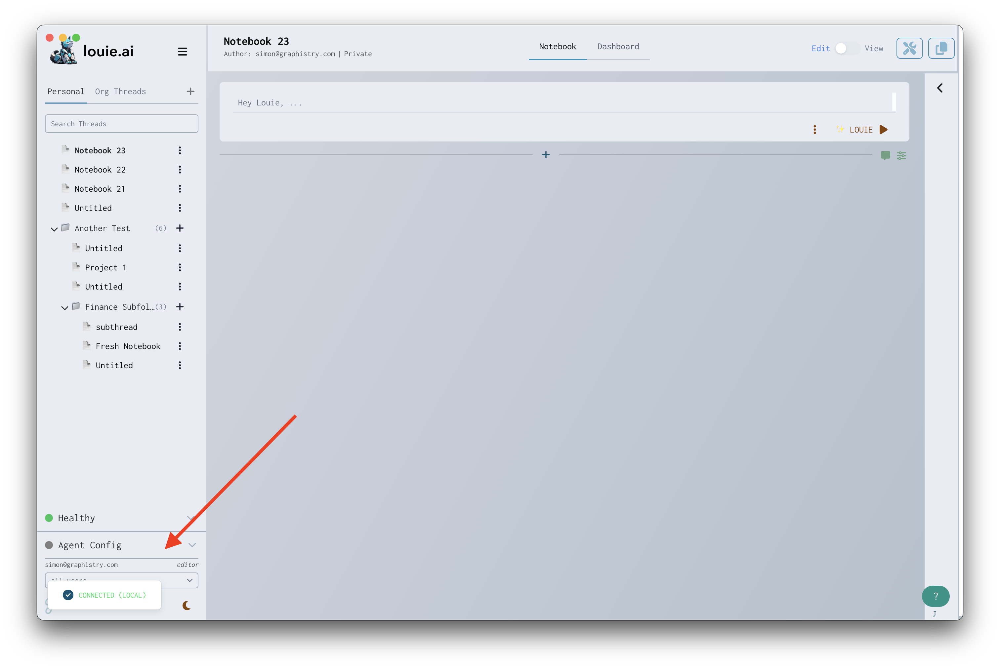
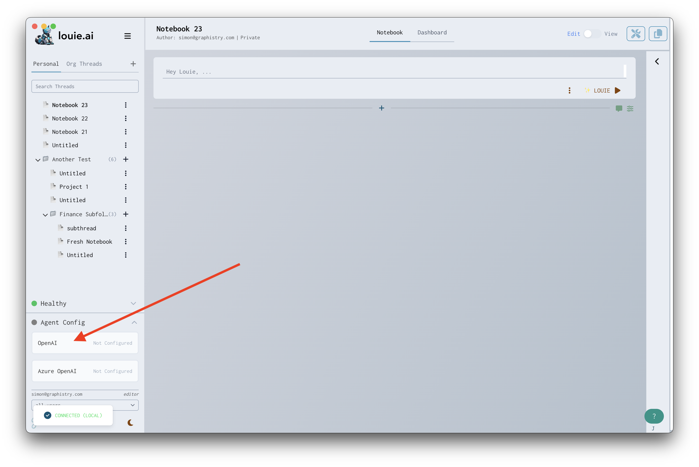
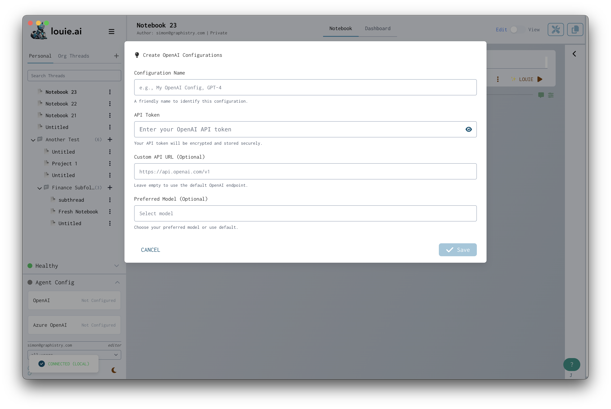

Configuring Your OpenAI API Key#
Louie uses OpenAI’s powerful language models to provide AI-driven data analysis and conversational features. To enable these capabilities, you’ll need to configure your OpenAI API key.
Step 1: Get Your OpenAI API Key#
First, you’ll need to create an API key from OpenAI:
Visit OpenAI’s Platform
Sign up or sign in to your account
Navigate to API Keys in your account settings
Click Create new secret key
Give your key a descriptive name (e.g., “Louie Desktop”)
Copy the generated key to your clipboard - you won’t be able to see it again
Important: Keep your API key secure and never share it publicly.
Step 2: Add Your API Key to Louie#
Once you have your API key copied to your clipboard, configure it in Louie:
Click Agent Config in the bottom left corner of Louie

Click OpenAI from the configuration options

Click New Configuration on the modal that appears

Enter your API key in the credentials field (paste from clipboard)

Click Save to complete the configuration
Your OpenAI API key is now configured and ready to use!
Understanding OpenAI Usage and Billing#
OpenAI charges based on your API usage:
Token-based billing - Costs are calculated based on input and output tokens
Monitor your usage - Check your OpenAI dashboard regularly
Set up billing - Add payment information at OpenAI Billing
Troubleshooting#
Invalid API Key#
If you receive an “Invalid API Key” error:
Verify you copied the entire key
Check that the key hasn’t been revoked in your OpenAI account
Ensure there are no extra spaces or characters
Generate a new key if needed
Rate Limit Errors#
If you encounter rate limiting:
Wait a few minutes and try again
Check your OpenAI usage tier
Consider upgrading your OpenAI plan
Insufficient Credits#
If you see “Insufficient credits” errors:
Add payment information to your OpenAI account
Set up a billing plan
Check your billing settings at OpenAI Billing
Next Steps#
Connect Your Data Sources
Start Your First Analysis
Explore AI-Powered Features